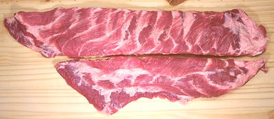

Pork Spare Ribs

[]
Spare ribs underlie the front portion of the Pork Belly cut. The photo
specimen is cut lengthwise "Santa Barbara style". The upper section, if
sold separately, would be "Saint Louis Ribs". Be aware, if using English
recipes, that in the UK "Spare Ribs" is a cut from the top of the shoulder
and actually contains no ribs (see
British Chart)
More on Cuts of Pork.
More on Culinary Snails.
Buying:
Spare ribs can be had, at widely varying prices,
in practically any market that sells meat - except kosher and hilal
butcher shops. It doesn't seem to make a lot of difference whether the
ribs are "fresh" or "previously frozen".
Prep:
for most recipes you will want to separate the ribs
and more often than not cut them to specific lengths. For both these tasks
by far the easiest method is to use a razor sharp Chinese cleaver knife
and a soft faced mallet with which to drive it through bone and
cartilage.
Cooking:
Spare ribs are cooked just about any way you can
cook meat, everything from simmered in soup to roasted on the grill.
ap_sribz 091026 - www.clovegarden.com
©Andrew Grygus - agryg@clovegaden.com - Photos on this
page not otherwise credited are © cg1 -
Linking to and non-commercial use of this page permitted